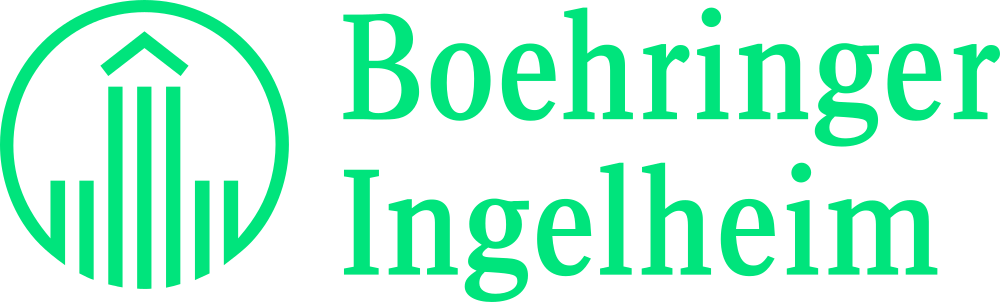

Work Experience
Internships across data science, analytics, and machine learning, from pharmaceutical and consumer goods to entertainment.
Incoming Systems Intern
·
Pixar Animation Studios
- ML, Automation, and Magic :)
Financial Data Engineer Co-op
·
The Clorox Company

Data Science/Analytics Intern — Process Analysis & KPI
·
Boehringer Ingelheim

Software Engineer
·
LG Nova
Data and Software Engineer
·
Relativity Space